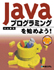
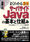
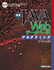

書籍一覧
| 書籍 | 発売日 | 在庫数 | |
|---|---|---|---|
.jpg)
|
明解Java プログラミング入門現在、Webアプリケーションの開発には不可欠の技術として重視されているサーブレット＆JSP。基本仕様の解説はむろんのこと、本書では特にサーブレットの多様な可能性を追求します。JavaMailや携帯電話、カスタムタグ、データベースとの連携など、これまで中上級者向けの書籍でしか扱われてこなかったようなテーマを一通り取り上げます。「仕様（文法）は何となくわかったけれど…」といった方でも興味を持ってお読みいただける一冊です。 |
2013/12/1 | 10 |
|  |
Javaプログラミングを始めよう！本書はパソコンスクールで講座を受けているような感覚で、Javaのプログラミングを修得できます。パソコンスクールの授業の進め方同様、まずは作ってみる。そしてあとから理屈を覚えていく。サンプルプログラムを作成していくことで、プログラミングがどんどん楽しくなります。各過程に補修問題や練習問題を多数掲載し、ステップ毎に実力が付いていることを実感することもできます。 |
2012/12/1 | 10 |
|  |
図解入門 よくわかる最新サーバサイドJavaの基本と仕組みいまやコンピュータ言語の枠を越え、インターネットの標準テクノロジーとしての地位を占める「Java」。Webの発展に不可欠のものとして、その重要性がますます高まっています。本書は、このJavaテクノロジーの最前線に迫ります。サーバサイドで展開するサーブレット、JSPといった技術はむろんのこと、J2EEとEJBコンポーネント、そして、JXTAやSun ONEといった最新の話題まで、あますところなくJavaテクノロジーの大いなる可能性と未来を展望します。 |
2011/12/1 | 10 |
|  |
標準Java Webデータベースプログラミング本書はデータベースを用いたサーバサイドアプリケーションのプログラミング方法を解説した書籍です。解説対象はJava(JSP、サーブレット、JDBC)、SQL(MySQL)です。 実際に簡単なデータベースとWebアプリケーションをつくり、実例を元に解説しているので、どのような原理で動作するのかわかりやすく学ぶ事が出来ます。 |
2010/12/1 | 10 |